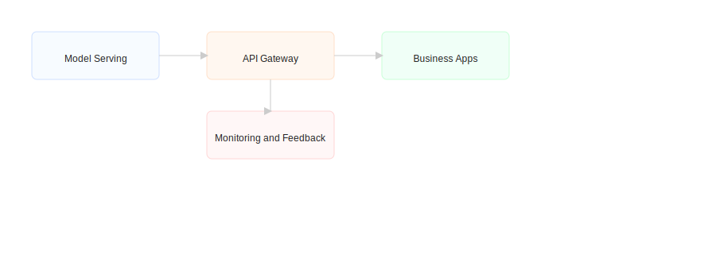

AI Integration & Services
From APIs to analytics, we integrate AI capabilities into business workflows and products for measurable impact.
Reference Architecture
Integration flow: model serving, API gateway, observability, and feedback loops for continuous improvement.
Key offerings
- Model serving & API development
- Analytics & reporting dashboards
- Workflow automation & RPA integration
- Monitoring, explainability & model drift detection